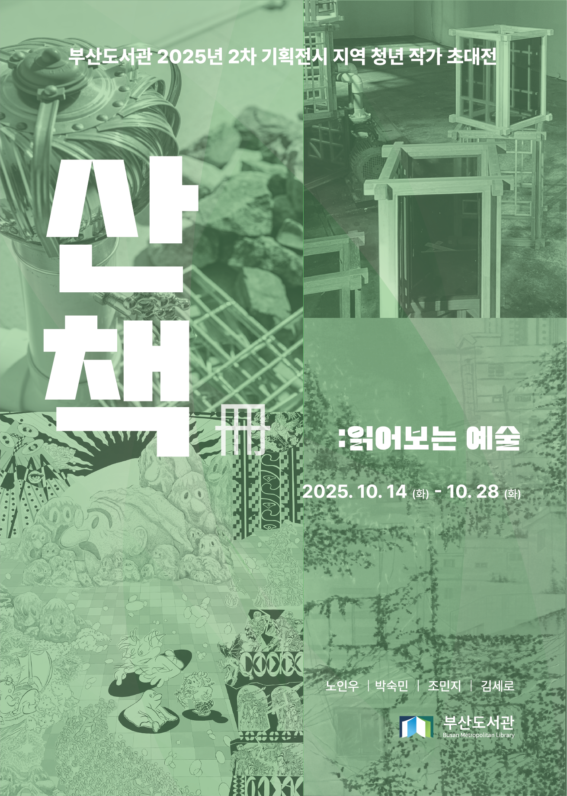
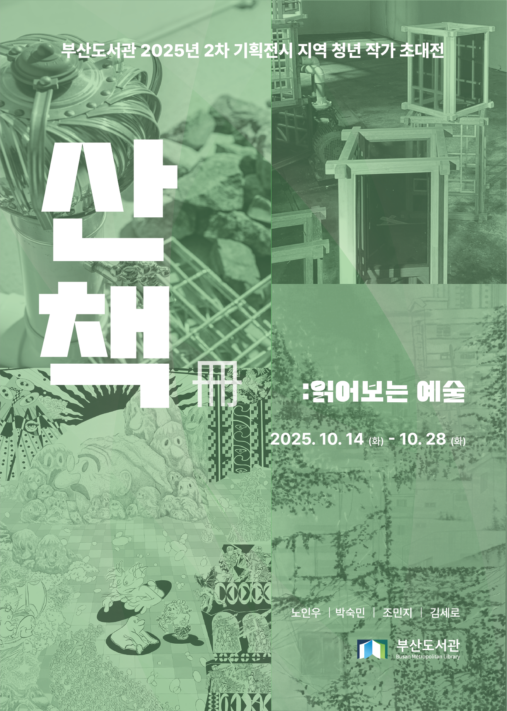

산책: 읽어보는 예술
장소: 부산도서관 2층 전시실
주최/주관: 부산도서관
참여 작가: 김세로, 노인우, 박숙민, 조민지
참여 기획자: 오윤영
촬영 및 영상: 박천현
도록 링크: https://drive.google.com/file/d/1Vvc2i0aLk5_-5qOTgeOesX2fkn6GeUc1/view?usp=sharing
《산책(冊): 읽어보는 예술》에는 사하구 홍티예술촌 소속 예술가 김세로, 노인우, 박숙민, 조민지가 참여한다. 네 명의 예술가는 오늘을 살아가는 산책자로서, 자신이 바라본 세상과 감정을 작품에 담았다. 방문자가 산책하듯 작품 사이를 거닐고, 일상과 예술을 잇는 갈피를 남기기를 바란다.
산책은 발견의 여정이다. 길 위에서 이야기를 찾고, 과거의 흔적과 지금의 풍경을 함께 읽어낸다. 발견은 풍경 바라보기에 그치지 않는다. 산책은 자기와 타인을 이해하는 시간이기도 하다. 인간은 자기 자신조차 온전히 알지 못하기에, 타인을 이해하기는 더욱 어렵다. 서로 다른 경험과 배경은 오해와 갈등을 낳는다. 작은 다툼은 대립으로 번지기도 한다. 산책은 여유와 발견을 통해 자신과 타인을 다시금 돌아보게 하며, 차이를 이해할 수 있게 한다.
산책자라는 말은 19세기 문학에서 사용한 플라뇌르(flâneur) 개념에서 가져왔다. 본래 ‘산책하다, 한가로이 놀다’라는 뜻에서 출발했으며, 오늘날에는 도시를 거닐며 주변을 관찰하는 인물을 말한다. 이번 전시에 참여한 예술가들은 각자의 시선으로 삶의 조각들을 탐색하여, 회화나 설치 등 다양한 매체로 풀어냈다. 작품에는 동시대를 살아가는 이들의 시선, 문제의식, 감정이 담겨 있다.
책은 타인의 시선을 빌려 세계를 읽고, 삶을 사유하게 한다. 네 명의 세계는 한 권의 “冊(책)”처럼 엮여 하나의 전시를 이룬다. 작품들은 삶 속에서의 발견이라는 맥락으로 모였다. 어떤 이에게는 낯설고, 또 다른 이에게는 친숙할 수 있는 이야기들이 얽혀있다. 전시장을 산책하는 동안 각자의 기억이 더해져 또 다른 이야기가 만들어진다. 전시는 예술가와 작품, 그리고 방문자의 시간을 잇는 산책이 된다.
김세로는 도시 속 소외된 사물을 통해 관계의 본질을 탐구한다. 우수관이나 돌처럼 지나치기 쉬운 대상에서 관계의 흐름과 균형을 읽어낸다. 우수관이 쓰레기로 막혀 빗물이 넘치듯, 관계에서도 편향적인 생각이나 이기적 태도가 쌓이면 문제가 생긴다. 그는 관계를 이어주는 중요한 요소로 ‘틈’을 말한다. 틈은 서로에게 적당한 거리이자 균형을 만들어 관계를 지탱하는 힘이다.
노인우는 빛과 그림자로 ‘다름’이 공존하는 공간을 만든다. 전통적 형태의 나무틀, 반투명 아크릴에 빛이 닿으면, 바닥과 벽은 형형색색의 그림자로 물든다. 빛 조각들은 작가의 개인적인 기억이자 다른 사람의 시선 속 세상이다. 작품은 방문자의 움직임, 햇빛과 설치 장소에 따라 끊임없이 달라진다. 변화하는 모든 순간이 작가에게는 조각의 일부이다. 작품은 과거를 현재로 불러오고, 방문자의 경험이 더해지며 새로운 의미가 만들어진다.
박숙민은 찰나의 풍경에서 떠오르는 감정을 회화로 옮긴다. 담벼락의 넝쿨, 나무 그림자, 재개발 지역의 골목 같은 장면은 일상에서 발견한 순간이다. 작가는 장소에 쌓인 기억과 복합적인 감정을 붙잡아 그림에 새긴다. 그에게 색채는 감정을 전하는 언어다. 노랑은 밝음과 불안을, 파랑은 희망과 삶의 굴곡을 상징한다. 최근에는 두 색이 섞여 생겨난 초록을 탐구하며 사라지고 변화하는 풍경 속 생명력을 그린다.
조민지는 상상 속 모험담을 빌려 내면과 외부 세계를 회화로 펼쳐낸다. 이야기에는 ‘아무개, D, 도깨비’ 같은 인물들이 반복 등장한다. 이들은 도깨비방망이를 찾아 길을 떠나거나, 억압적 질서 ‘그레이색이야’와 마주하기도 한다. 한국화를 전공한 작가는 초기 작업에서 한지에 먹으로 만화 속 인물을 그리거나, 곡선 틀에 그림을 붙이는 등 여러 실험을 이어왔다. 최근에는 자신이 만든 세계를 확장하며 혼란과 성장, 자기 탐색의 과정을 담아내고 있다.